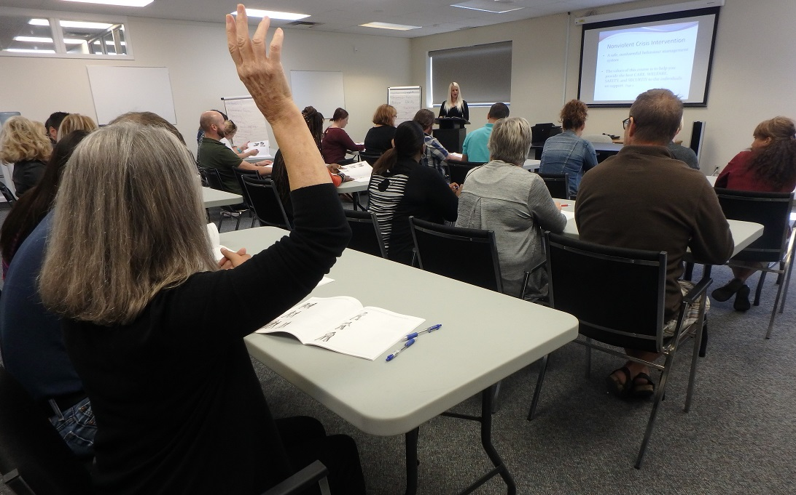
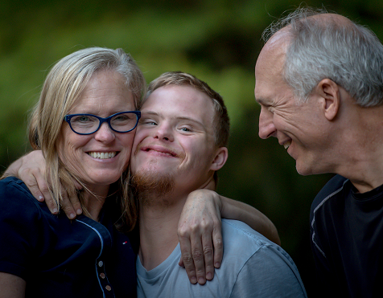

Support that fits a life.
No two people need the same things. We offer four areas of support — and shape each one around the person, their goals, and their pace.

Days with purpose and people
Programs built around what each person wants from their week — learning, volunteering, recreation, and real friendships in the community.
- Skill-building and life skills
- Community volunteering and outings
- Recreation, art and music

A real home, with support that fits
Welcoming homes — pets included — with staff on hand 24/7, so safety and independence grow side by side.
- Around-the-clock staffing
- Homes in real neighbourhoods
- Support shaped to each resident

Help for the people who help
Respite, guidance and practical support for families — because caring for a loved one shouldn't mean doing it alone.
- Respite that families can count on
- Help navigating funding and systems
- A partner for the long run

Your own place, your own pace
One-to-one support for adults living in their own homes — as much help as needed, as little as wanted.
- Budgeting, cooking and daily living
- Appointments and connections
- Support hours that flex with life

A life, not a program
Support plans here begin with a person's own words — what a good week looks like, what they want to learn, who they want around them. The service follows. That is what person-centred means at Pulford, and it has not changed since 1986.
More about how we workThree quiet steps
Reach out
Call us or send a note — a real person answers, and there is no wrong door.
We listen
We meet you and your family, learn what matters, and explain funding options in plain language.
We build the plan together
Support starts at the pace of trust — and adjusts as life does.